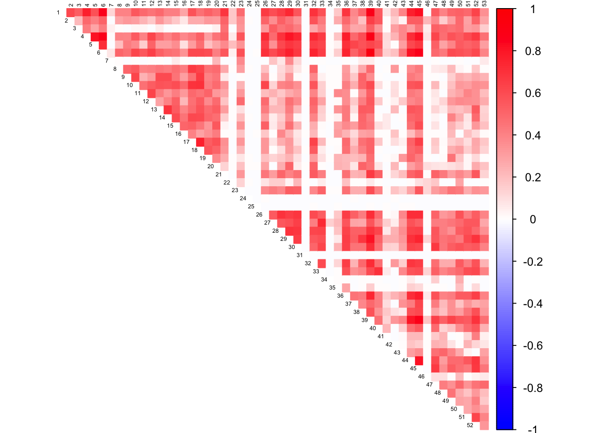

Last updated: 2019-01-19
workflowr checks: (Click a bullet for more information) ✖ R Markdown file: uncommitted changes
The R Markdown is untracked by Git. To know which version of the R Markdown file created these results, you’ll want to first commit it to the Git repo. If you’re still working on the analysis, you can ignore this warning. When you’re finished, you can run wflow_publish to commit the R Markdown file and build the HTML.
✔ Environment: empty
Great job! The global environment was empty. Objects defined in the global environment can affect the analysis in your R Markdown file in unknown ways. For reproduciblity it’s best to always run the code in an empty environment.
✔ Seed:
set.seed(20190114)
The command set.seed(20190114) was run prior to running the code in the R Markdown file. Setting a seed ensures that any results that rely on randomness, e.g. subsampling or permutations, are reproducible.
✔ Session information: recorded
Great job! Recording the operating system, R version, and package versions is critical for reproducibility.
✔ Repository version: 79c8c87
wflow_publish or wflow_git_commit). workflowr only checks the R Markdown file, but you know if there are other scripts or data files that it depends on. Below is the status of the Git repository when the results were generated:
Ignored files:
Ignored: .DS_Store
Ignored: .Rhistory
Ignored: .Rproj.user/
Ignored: data/BEDFILES/
Ignored: data/GSEA/
Untracked files:
Untracked: analysis/gene_lists_corshrink_sparse.Rmd
Untracked: code/corshrink2_tissue_tissue.R
Untracked: code/make_gene_lists.R
Untracked: docs/figure/gene_lists_corshrink_sparse.Rmd/
Unstaged changes:
Modified: code/gene_names_to_ensembl.R
library(corrplot)corrplot 0.84 loadedlibrary(CorShrink)
setwd("~/Documents/CorShrink2/")################ Fitted correlation matrix from CorShrink-sparse #########################
corshrink_mat = get(load("data/CorShrink2Sparse_all_genes.rda"))
############### Log CPM normalized gene expression data #############################
person_tissue_genes = get(load("data/person_tissue_genes_voom.rda"))
tissue_names = names(person_tissue_genes[1,,1])
################ Gene names from the GTEx analysis ############################
gene_names_gtex = as.character(read.table("data/gene_names_GTEX_V6.txt")[,1])
gene_names_gtex = as.character(sapply(gene_names_gtex, function(z) return(strsplit(z, "[.]")[[1]][1])))
############### Gene name with their locations on chromosomes #############################
list_genes_qc = read.table("data/list_genes_qc.txt", header = TRUE)
ensg_names_list_genes = as.character(sapply(as.character(list_genes_qc$ENSG),
function(z) return(strsplit(z, "[.]")[[1]][1])))num_records = 200tab <- array(0, dim(corshrink_mat)[3])
for(m in 1:dim(corshrink_mat)[3]){
temp <- corshrink_mat[(8:20), (8:20), m]
tab[m] <- (quantile(temp[row(temp) > col(temp)], 0.25))
}
imp_ids = order(tab, decreasing = TRUE)[1:1000]
imp_genes = gene_names_gtex[imp_ids]
write.table(imp_genes[1:num_records], file = "data/GSEA/brain_corr_genes_list.txt",
quote=FALSE, row.names = FALSE, col.names = FALSE)
matched_ids = match(imp_genes, ensg_names_list_genes)
newlist = list_genes_qc[matched_ids[!is.na(matched_ids)],]
table(newlist$chr)
chr1 chr10 chr11 chr12 chr13 chr14 chr15 chr16 chr17 chr18 chr19 chr2
91 33 47 31 12 22 23 31 31 4 62 43
chr20 chr21 chr22 chr3 chr4 chr5 chr6 chr7 chr8 chr9
15 15 24 40 28 36 55 32 25 15 df = newlist[, c("chr", "start.ensembl", "end.ensembl")]
df[,2] = df[,2] - 10000
df[,3] = df[,3] + 10000
col2 <- c("blue", "white", "red")
corrplot(as.matrix(corshrink_mat[,,imp_ids[100]]), diag = FALSE,
col = colorRampPalette(col2)(200),
tl.pos = "td", tl.cex = 0.4, tl.col = "black",
rect.col = "white",na.label.col = "white",
method = "color", type = "upper")write.table(df, file = "data/BEDFILES/brain_corr_genes_ENSEMBL_top_1000.bed",
quote=FALSE, row.names = FALSE, col.names = FALSE, sep = "\t")tab <- array(0, dim(corshrink_mat)[3])
for(m in 1:dim(corshrink_mat)[3]){
temp <- corshrink_mat[,, m]
tab[m] <- (quantile(temp[row(temp) > col(temp)], 0.25))
}
imp_ids = order(tab, decreasing = TRUE)[1:1000]
imp_genes = gene_names_gtex[imp_ids]
write.table(imp_genes[1:num_records], file = "data/GSEA/all_corr_genes_list.txt",
quote=FALSE, row.names = FALSE, col.names = FALSE)
matched_ids = match(imp_genes, ensg_names_list_genes)
newlist = list_genes_qc[matched_ids[!is.na(matched_ids)],]
table(newlist$chr)
chr1 chr10 chr11 chr12 chr13 chr14 chr15 chr16 chr17 chr18 chr19 chr2
54 22 38 21 8 18 21 30 43 3 39 20
chr20 chr21 chr22 chr3 chr4 chr5 chr6 chr7 chr8 chr9
14 6 11 28 13 30 37 22 14 18 df = newlist[, c("chr", "start.ensembl", "end.ensembl")]
df[,2] = df[,2] - 10000
df[,3] = df[,3] + 10000
col2 <- c("blue", "white", "red")
corrplot(as.matrix(corshrink_mat[,,imp_ids[100]]), diag = FALSE,
col = colorRampPalette(col2)(200),
tl.pos = "td", tl.cex = 0.4, tl.col = "black",
rect.col = "white",na.label.col = "white",
method = "color", type = "upper")
write.table(df, file = "data/BEDFILES/all_corr_genes_ENSEMBL_top_1000.bed",
quote=FALSE, row.names = FALSE, col.names = FALSE, sep = "\t")tab <- array(0, dim(corshrink_mat)[3])
for(m in 1:dim(corshrink_mat)[3]){
temp <- corshrink_mat[,, m]
tab[m] <- (quantile(temp[row(temp) > col(temp)], 0.25))
}
imp_ids = order(tab, decreasing = FALSE)[1:1000]
imp_genes = gene_names_gtex[imp_ids]
write.table(imp_genes[1:num_records], file = "data/GSEA/no_tissue_corr_genes_list.txt",
quote=FALSE, row.names = FALSE, col.names = FALSE)
matched_ids = match(imp_genes, ensg_names_list_genes)
newlist = list_genes_qc[matched_ids[!is.na(matched_ids)],]
table(newlist$chr)
chr1 chr10 chr11 chr12 chr13 chr14 chr15 chr16 chr17 chr18 chr19 chr2
77 26 31 39 10 20 34 29 39 11 39 48
chr20 chr21 chr22 chr3 chr4 chr5 chr6 chr7 chr8 chr9
21 6 21 28 26 32 29 26 15 28 df = newlist[, c("chr", "start.ensembl", "end.ensembl")]
df[,2] = df[,2] - 10000
df[,3] = df[,3] + 10000
col2 <- c("blue", "white", "red")
corrplot(as.matrix(corshrink_mat[,,imp_ids[10]]), diag = FALSE,
col = colorRampPalette(col2)(200),
tl.pos = "td", tl.cex = 0.4, tl.col = "black",
rect.col = "white",na.label.col = "white",
method = "color", type = "upper")write.table(df, file = "data/BEDFILES/no_tissue_corr_genes_ENSEMBL_top_1000.bed",
quote=FALSE, row.names = FALSE, col.names = FALSE, sep = "\t")tab <- array(0, dim(corshrink_mat)[3])
for(m in 1:dim(corshrink_mat)[3]){
temp <- corshrink_mat[(8:20),(8:20), m]
tab[m] <- (quantile(temp[row(temp) > col(temp)], 0.7))
}
imp_ids = order(tab, decreasing = FALSE)[1:1000]
imp_genes = gene_names_gtex[imp_ids]
write.table(imp_genes[1:num_records], file = "data/GSEA/non_brain_corr_genes_list.txt",
quote=FALSE, row.names = FALSE, col.names = FALSE)
matched_ids = match(imp_genes, ensg_names_list_genes)
newlist = list_genes_qc[matched_ids[!is.na(matched_ids)],]
table(newlist$chr)
chr1 chr10 chr11 chr12 chr13 chr14 chr15 chr16 chr17 chr18 chr19 chr2
73 32 45 32 8 21 17 23 51 2 32 29
chr20 chr21 chr22 chr3 chr4 chr5 chr6 chr7 chr8 chr9
27 5 16 43 21 19 37 36 21 35 df = newlist[, c("chr", "start.ensembl", "end.ensembl")]
df[,2] = df[,2] - 10000
df[,3] = df[,3] + 10000
col2 <- c("blue", "white", "red")
corrplot(as.matrix(corshrink_mat[,,imp_ids[100]]), diag = FALSE,
col = colorRampPalette(col2)(200),
tl.pos = "td", tl.cex = 0.4, tl.col = "black",
rect.col = "white",na.label.col = "white",
method = "color", type = "upper")write.table(df, file = "data/BEDFILES/non_brain_corr_genes_ENSEMBL_top_1000.bed",
quote=FALSE, row.names = FALSE, col.names = FALSE, sep = "\t")tab <- array(0, dim(corshrink_mat)[3])
for(m in 1:dim(corshrink_mat)[3]){
temp <- corshrink_mat[(8:20), (8:20), m]
temp1 <- corshrink_mat[-(8:20),-(8:20), m]
tab[m] <- (quantile(temp[row(temp) > col(temp)], 0.25)) - (quantile(temp1[row(temp1) > col(temp1)], 0.75))
}
imp_ids = order(tab, decreasing = FALSE)[1:1000]
imp_genes = gene_names_gtex[imp_ids]
write.table(imp_genes[1:num_records], file = "data/GSEA/just_non_brain_corr_genes_list.txt",
quote=FALSE, row.names = FALSE, col.names = FALSE)
matched_ids = match(imp_genes, ensg_names_list_genes)
newlist = list_genes_qc[matched_ids[!is.na(matched_ids)],]
table(newlist$chr)
chr1 chr10 chr11 chr12 chr13 chr14 chr15 chr16 chr17 chr18 chr19 chr2
74 24 36 33 7 11 24 36 42 3 37 36
chr20 chr21 chr22 chr3 chr4 chr5 chr6 chr7 chr8 chr9
17 12 22 34 14 23 36 28 20 20 df = newlist[, c("chr", "start.ensembl", "end.ensembl")]
df[,2] = df[,2] - 10000
df[,3] = df[,3] + 10000
col2 <- c("blue", "white", "red")
corrplot(as.matrix(corshrink_mat[,,imp_ids[1]]), diag = FALSE,
col = colorRampPalette(col2)(200),
tl.pos = "td", tl.cex = 0.4, tl.col = "black",
rect.col = "white",na.label.col = "white",
method = "color", type = "upper")write.table(df, file = "data/BEDFILES/just_non_brain_corr_genes_ENSEMBL_top_1000.bed",
quote=FALSE, row.names = FALSE, col.names = FALSE, sep = "\t")tab <- array(0, dim(corshrink_mat)[3])
for(m in 1:dim(corshrink_mat)[3]){
temp <- corshrink_mat[(8:20), (8:20), m]
temp1 <- corshrink_mat[-(8:20),-(8:20), m]
tab[m] <- (quantile(temp[row(temp) > col(temp)], 0.25)) - (quantile(temp1[row(temp1) > col(temp1)], 0.75))
}
imp_ids = order(tab, decreasing = TRUE)[1:1000]
imp_genes = gene_names_gtex[imp_ids]
write.table(imp_genes[1:num_records], file = "data/GSEA/just_brain_corr_genes_list.txt",
quote=FALSE, row.names = FALSE, col.names = FALSE)
matched_ids = match(imp_genes, ensg_names_list_genes)
newlist = list_genes_qc[matched_ids[!is.na(matched_ids)],]
table(newlist$chr)
chr1 chr10 chr11 chr12 chr13 chr14 chr15 chr16 chr17 chr18 chr19 chr2
99 37 53 37 13 21 29 37 42 10 94 47
chr20 chr21 chr22 chr3 chr4 chr5 chr6 chr7 chr8 chr9
18 14 27 46 30 36 50 38 27 27 df = newlist[, c("chr", "start.ensembl", "end.ensembl")]
df[,2] = df[,2] - 10000
df[,3] = df[,3] + 10000
col2 <- c("blue", "white", "red")
corrplot(as.matrix(corshrink_mat[,,imp_ids[1]]), diag = FALSE,
col = colorRampPalette(col2)(200),
tl.pos = "td", tl.cex = 0.4, tl.col = "black",
rect.col = "white",na.label.col = "white",
method = "color", type = "upper")write.table(df, file = "data/BEDFILES/just_brain_corr_genes_ENSEMBL_top_1000.bed",
quote=FALSE, row.names = FALSE, col.names = FALSE, sep = "\t")sessionInfo()R version 3.5.1 (2018-07-02)
Platform: x86_64-apple-darwin15.6.0 (64-bit)
Running under: macOS High Sierra 10.13.6
Matrix products: default
BLAS: /Library/Frameworks/R.framework/Versions/3.5/Resources/lib/libRblas.0.dylib
LAPACK: /Library/Frameworks/R.framework/Versions/3.5/Resources/lib/libRlapack.dylib
locale:
[1] en_US.UTF-8/en_US.UTF-8/en_US.UTF-8/C/en_US.UTF-8/en_US.UTF-8
attached base packages:
[1] stats graphics grDevices utils datasets methods base
other attached packages:
[1] CorShrink_0.1-6 corrplot_0.84
loaded via a namespace (and not attached):
[1] gmp_0.5-13.2 Rcpp_1.0.0 plyr_1.8.4
[4] compiler_3.5.1 git2r_0.23.0 CVXR_0.99-2
[7] workflowr_1.1.1 R.methodsS3_1.7.1 R.utils_2.7.0
[10] iterators_1.0.10 tools_3.5.1 digest_0.6.18
[13] bit_1.1-14 gtable_0.2.0 evaluate_0.12
[16] lattice_0.20-35 Matrix_1.2-14 foreach_1.4.4
[19] yaml_2.2.0 parallel_3.5.1 gridExtra_2.3
[22] Rmpfr_0.7-1 ECOSolveR_0.4 stringr_1.3.1
[25] knitr_1.20 glmnet_2.0-16 rprojroot_1.3-2
[28] bit64_0.9-7 grid_3.5.1 R6_2.3.0
[31] rmarkdown_1.10 reshape2_1.4.3 corpcor_1.6.9
[34] ashr_2.2-23 magrittr_1.5 whisker_0.3-2
[37] backports_1.1.2 codetools_0.2-15 htmltools_0.3.6
[40] scs_1.1-1 MASS_7.3-50 stringi_1.2.4
[43] doParallel_1.0.14 pscl_1.5.2 truncnorm_1.0-8
[46] SQUAREM_2017.10-1 R.oo_1.22.0 This reproducible R Markdown analysis was created with workflowr 1.1.1